第二节 Java开发环境搭建（一）
一、JDK与JRE
JDK：Java Development Kit，Java开发工具包，是给开发人员使用的，其中包含了Java的开发工具，如java、javac、jar等命令，同时也包含了JRE。
JRE：Java Runtime Environment，Java运行环境，包含了Java虚拟机和Java程序所需的核心类库。如果只是想运行一个开发好的Java程序，计算机只需要安装JRE就可以了。
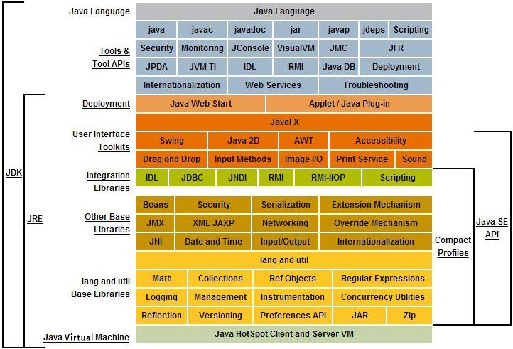
JDK与JRE结构图解
二、JDK下载
http://www.oracle.com/，选择Downloads，Java SE
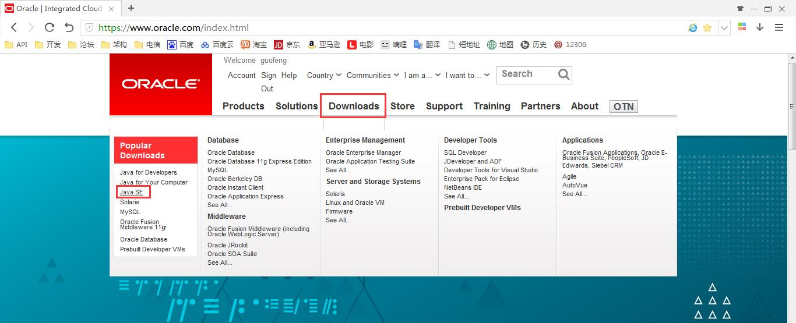
选择Java Archive
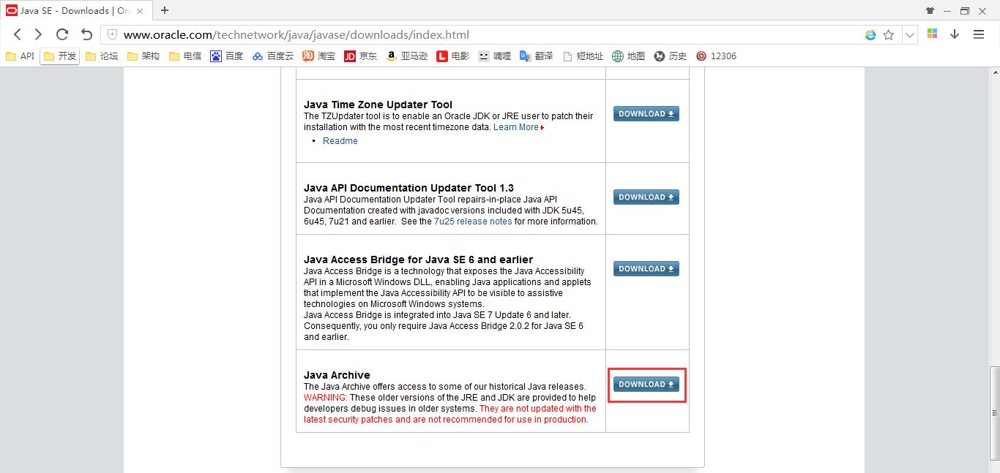
选择Java SE6
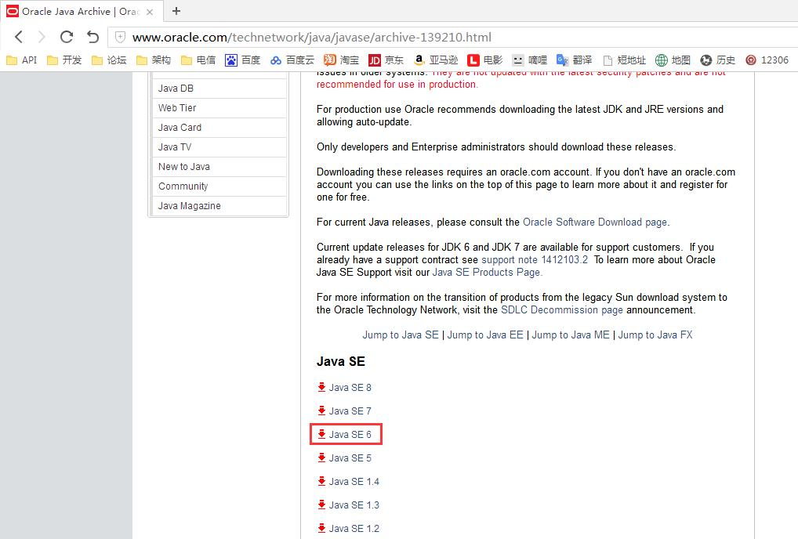
选择Java SE Development Kit 6u45
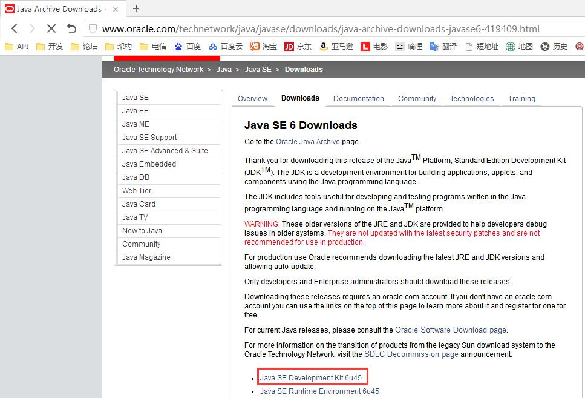
同意许可，选择需要的版本，在这里我们选择Windows x86版本
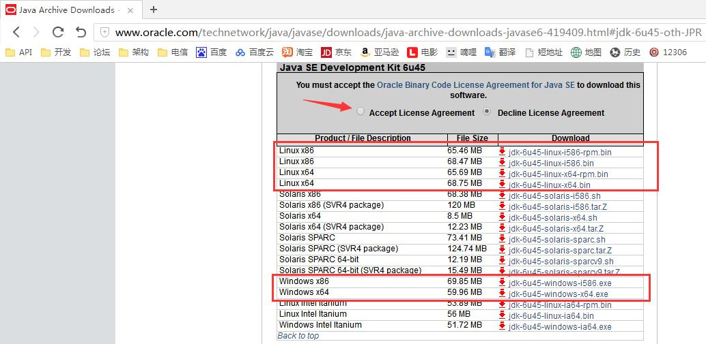
弹出登录界面，如果没有帐号可以注册，登录后即可下载
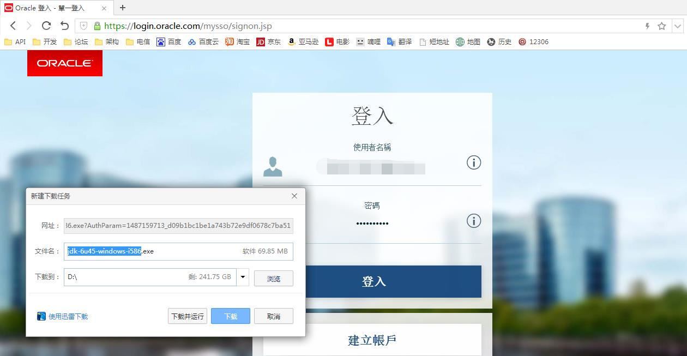
三、JDK安装
点击安装程序，开始安装流程
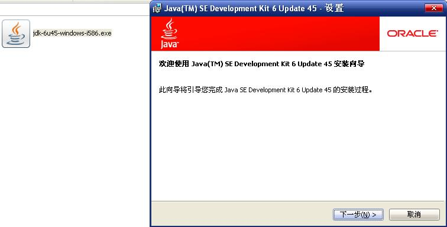
下一步
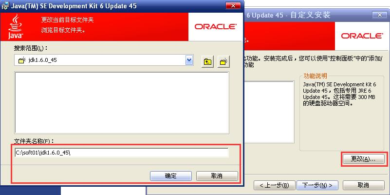
更改安装目录后确定，下一步，开始安装jdk
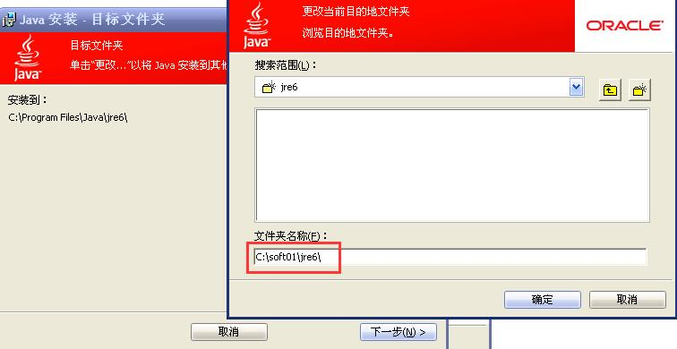
更改jre安装目录后确定，进入下一步
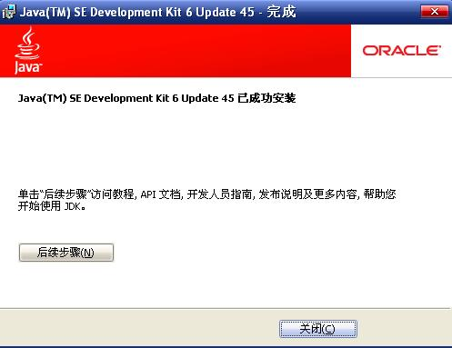
安装完成
加入 QQ 群：5ijy网站开发交流  ，获取更多源代码和开发环境配置信息。
，获取更多源代码和开发环境配置信息。